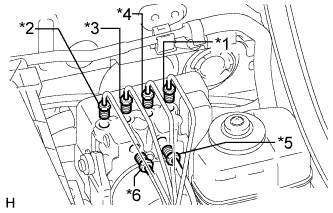

БЛОК УПРАВЛЕНИЯ РАБОЧИМИ ЦИЛИНДРАМИ ТОРМОЗОВ > УСТАНОВКА |
| 1. УСТАНОВИТЕ АМОРТИЗАТОР БОЛТА БЛОКА УПРАВЛЕНИЯ РАБОЧИМИ ЦИЛИНДРАМИ ТОРМОЗОВ |
Установите 3 амортизатора болтов блока управления рабочими цилиндрами тормозов на кронштейн блока управления рабочими цилиндрами тормозов.
| 2. УСТАНОВИТЕ ВТУЛКУ КОРПУСА БЛОКА УПРАВЛЕНИЯ РАБОЧИМИ ЦИЛИНДРАМИ ТОРМОЗОВ |
Установите 3 втулки корпуса блока управления рабочими цилиндрами тормозов на амортизаторы болтов блока управления рабочими цилиндрами тормозов.
| 3. УСТАНОВИТЕ КРОНШТЕЙН БЛОКА УПРАВЛЕНИЯ РАБОЧИМИ ЦИЛИНДРАМИ ТОРМОЗОВ |
Установите кронштейн блока управления на блок управления рабочими цилиндрами тормозов и закрепите его 3 болтами. Равномерно затяните 3 болта в алфавитном порядке.
| 4. УСТАНОВИТЕ БЛОК УПРАВЛЕНИЯ РАБОЧИМИ ЦИЛИНДРАМИ ТОРМОЗОВ В СБОРЕ |
Установите блок управления рабочими цилиндрами тормозов с кронштейном и закрепите 3 гайками. Равномерно затяните 3 гайки в алфавитном порядке.
|  |
Расположите все трубопроводы тормозной системы в соответствующих местах на блоке управления рабочими цилиндрами тормозов, как показано на рисунке.
С помощью разрезной головки закрепите каждый трубопровод тормозной системы.
Подсоедините разъем блока управления рабочими цилиндрами тормозов.
| 5. УСТАНОВИТЕ КОРПУС ВОЗДУШНОГО ФИЛЬТРА В СБОРЕ (для моделей с 2TR-FE) |
| 6. УСТАНОВИТЕ КОРПУС ВОЗДУШНОГО ФИЛЬТРА В СБОРЕ (для моделей с 5L-E) |
| 7. ПРОКАЧАЙТЕ ТОРМОЗНУЮ СИСТЕМУ |
Снимите крышку наливного отверстия бачка главного цилиндра тормозной системы в сборе.
Добавляйте тормозную жидкость до тех пор, пока ее уровень не окажется между отметками MIN и MAX бачка.
С помощью разрезной головки отсоедините 2 трубопровода тормозной системы от главного цилиндра.
Медленно нажмите и удерживайте педаль тормоза.
Закройте отверстия трубопроводов пальцами, а затем отпустите педаль тормоза.
Уберите пальцы, медленно нажмите и удерживайте педаль тормоза, снова закройте отверстия трубопроводов пальцами, а затем отпустите педаль тормоза. Повторите эту операцию 3-4 раза.
С помощью разрезной головки подсоедините 2 трубопровода тормозной системы к главному цилиндру тормозной системы в сборе.
Ослабьте прокачной штуцер колесного тормозного цилиндра правого переднего тормоза.
Многократно нажимая на педаль тормоза, удалите воздух из прокачного штуцера колесного тормозного цилиндра правого переднего тормоза.
Когда воздух будет удален полностью, затяните прокачной штуцер, удерживая нажатой педаль тормоза.
Удалите воздух из прокачного штуцера колесного тормозного цилиндра левого переднего дискового тормоза таким же образом, как с правой стороны.
Ослабьте прокачной штуцер колесного тормозного цилиндра правого заднего тормоза.
Многократно нажимая на педаль тормоза, удалите воздух из прокачного штуцера колесного тормозного цилиндра правого заднего тормоза.
Когда воздух будет удален полностью, затяните прокачной штуцер, удерживая нажатой педаль тормоза.
Удалите воздух из прокачного штуцера колесного тормозного цилиндра левого заднего дискового тормоза таким же образом, как с правой стороны.
Выключите зажигание и подсоедините портативный диагностический прибор к разъему DLC3.
Включите зажигание и портативный диагностический прибор.
Войдите в следующие меню: Chassis / ABS/VSC/TRC / Utility / Air Bleeding.
Выберите и запустите операцию "Inhalation" (всасывание) на экране Air Bleeding (прокачка) портативного диагностического прибора.
Ослабьте прокачной штуцер правого переднего колеса.*1
Приведите в действие блок управления с помощью портативного диагностического прибора.
С помощью экрана портативного диагностического прибора убедитесь, что операция прекратилась.
Затяните прокачной штуцер.*2
Повторяйте рассмотренные выше процедуры с *1 по *2, пока воздух не будет удален полностью.
Затяните прокачной штуцер.
Удалите воздух из системы правого заднего колеса, действуя таким же образом, как для правого переднего колеса.
Выберите и запустите операцию "Decrease" (понижение) на экране Air Bleeding (прокачка) портативного диагностического прибора.
Ослабьте прокачной штуцер правого переднего колеса.*3
С помощью портативного диагностического прибора приведите в действие блок управления и одновременно до упора нажмите и удерживайте педаль тормоза.
Затяните прокачной штуцер и отпустите педаль тормоза.*4
Повторяйте рассмотренные выше процедуры с *3 по *4, пока воздух не будет удален полностью.
Затяните прокачной штуцер.
Удалите воздух из систем 3 других колес, действуя таким же образом, как для правого переднего колеса.
Повторите процедуру удаления воздуха из трубопровода тормозной системы, многократно нажимая на педаль тормоза.
Проверьте, нет ли утечек тормозной жидкости.
Проверьте уровень жидкости в бачке (Нажмите здесь).
| 8. ПОДСОЕДИНИТЕ ПРОВОД К ОТРИЦАТЕЛЬНОМУ ВЫВОДУ АККУМУЛЯТОРНОЙ БАТАРЕИ |
| 9. ПРОВЕРЬТЕ БЛОК УПРАВЛЕНИЯ РАБОЧИМИ ЦИЛИНДРАМИ ТОРМОЗОВ С ПОМОЩЬЮ ПОРТАТИВНОГО ДИАГНОСТИЧЕСКОГО ПРИБОРА |
| 10. ВЫПОЛНИТЕ КАЛИБРОВКУ "НУЛЯ" ДАТЧИКА ЗАМЕДЛЕНИЯ И РЫСКАНЬЯ |